NYUAD, Zayed University and Khalifa University Robotics Collaboration
Researcher - Robotics and Intelligent Systems Control. Abu Dhabi, UAE
Feb 2020 - Current
My Work
• Co-developed a calm computing system that uses Hector SLAM and real-time optimal geodesic trajectory planning on SLAM map for multi-node data transfer using TurtleBot3 and RP Lidar in ROS (Python and C++).
• Designed and co-developed an iOT system that incorporates various sensors, communication protocols, and mobile applications with Google Assistant for effective control and automation in calm computing applications.
Photos
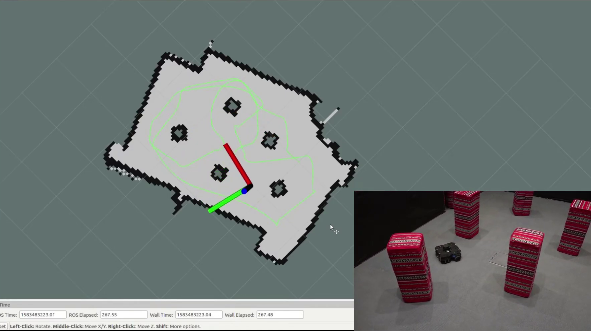
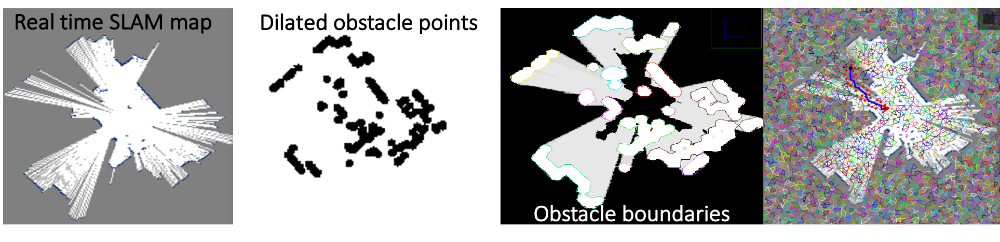
 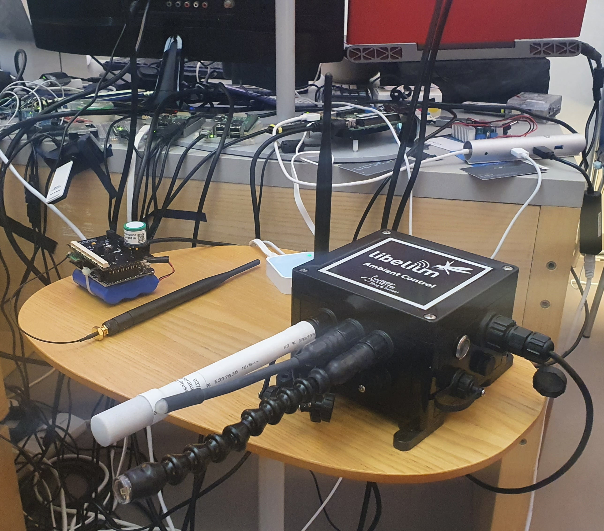
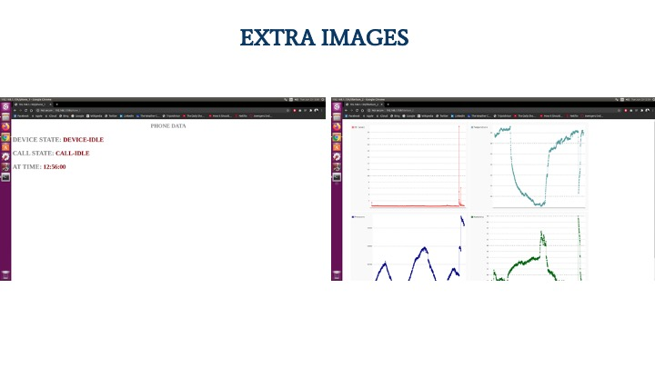
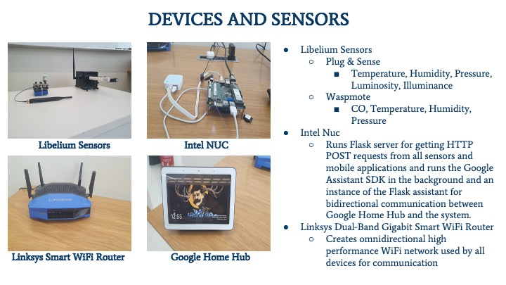
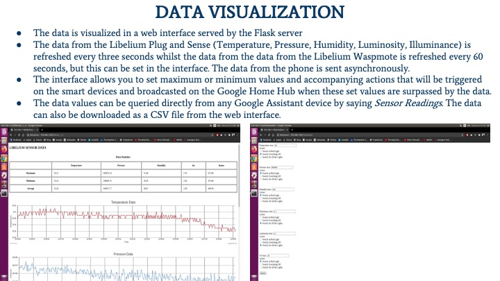
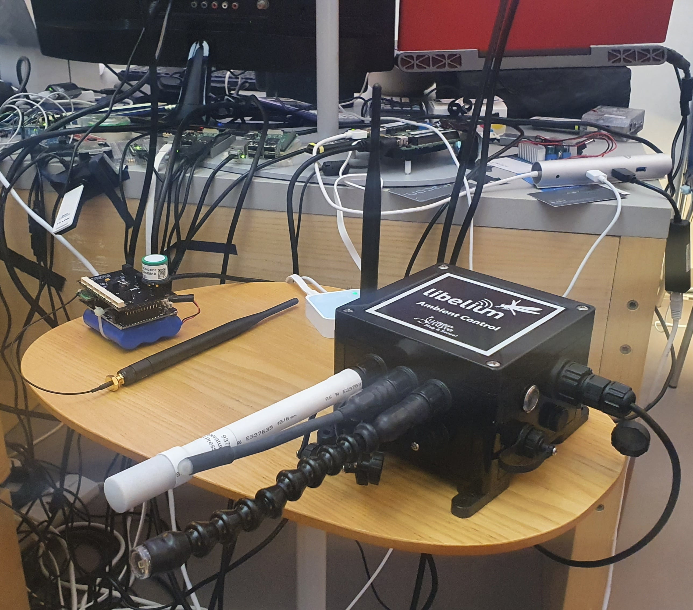
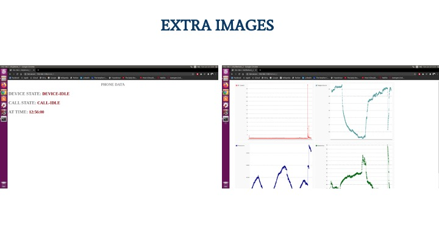
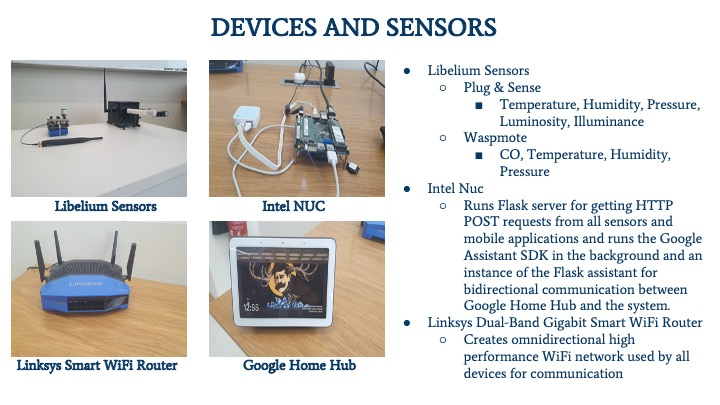
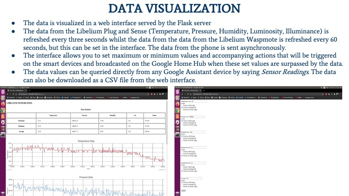
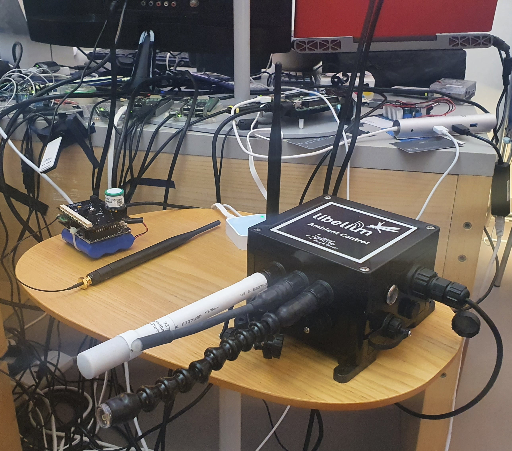
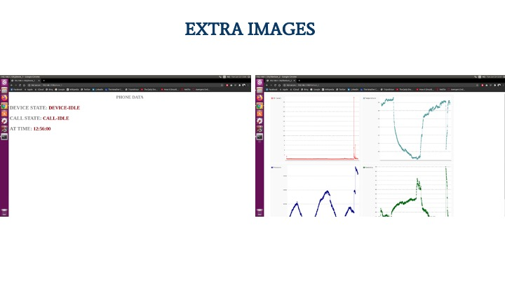
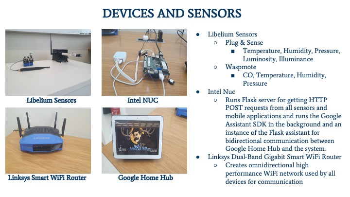
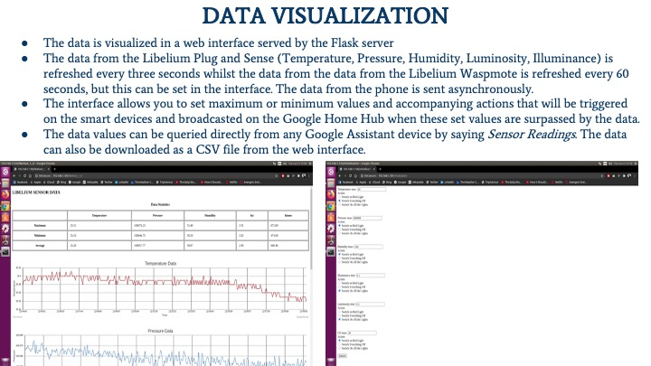
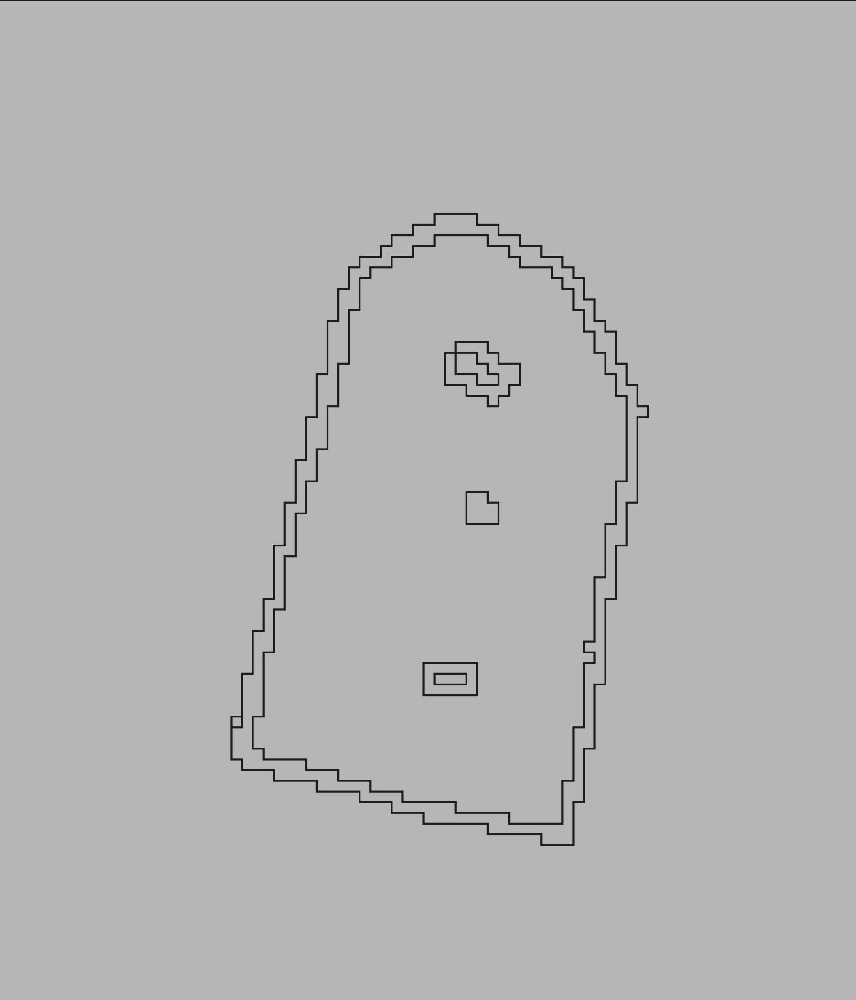
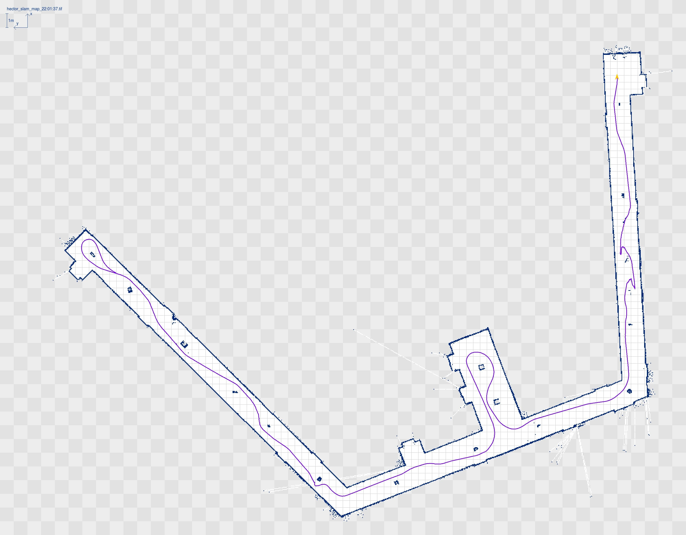
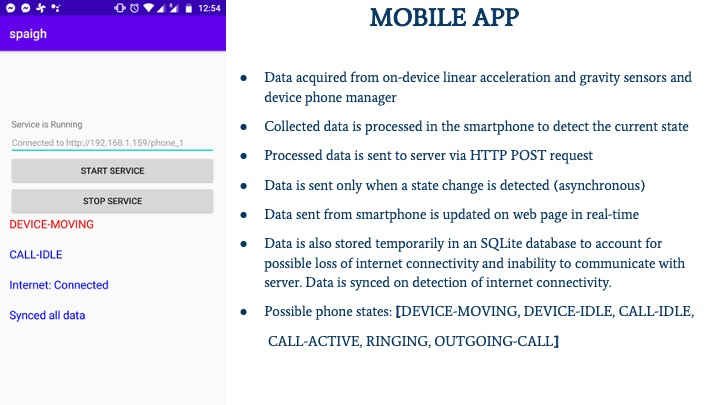
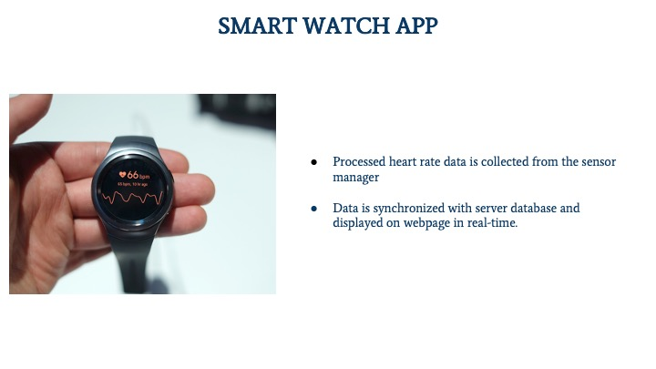